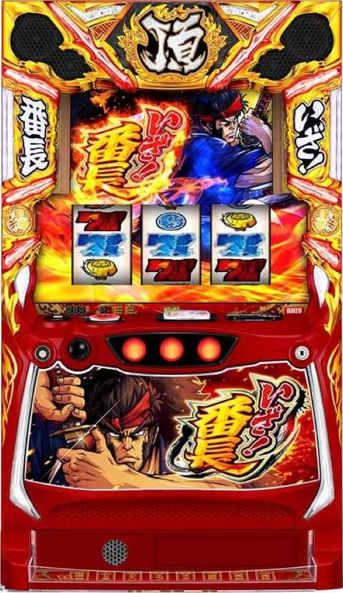

いざ！番長
150枚＋αの頂ZBASHから決闘へ。番長BONUS、武士道、絶頂決戦を経て青頂を狙う。
- 導入
- 2025年6月
- メーカー
- サボハニ
- 分類
- パチスロ
主要スペック
規定ゲーム数・刺客ゾーンから頂ZBASHへ入り、ステージ移行、差枚数直乗せ、刀ポイント、3G＋αの決闘、番長BONUS、倍斬刀チャレンジ、愛の教育的武士道、絶頂決戦～巌流島～、青頂ZBASHまでを機種専用画面で体験できます。
- 頂ZBASHは初期150枚＋α・純増約2.8枚/G
- 決闘勝利で赤7・青7・武士道・絶頂
- 絶頂決戦は平均約700枚・終了後は青頂ZBASH
いざ！番長の見どころと計算条件
規定ゲーム数・刺客ゾーンから頂ZBASHへ入り、ステージ移行、差枚数直乗せ、刀ポイント、3G＋αの決闘、番長BONUS、倍斬刀チャレンジ、愛の教育的武士道、絶頂決戦～巌流島～、青頂ZBASHまでを機種専用画面で体験できます。
いざ！番長を数字で早分かり
刺客ゾーン／規定Gから頂ZBASH、青頂ZBASHまでの流れと、設定ごとの結果差を固定レートで比較できます。
30秒で分かるいざ！番長
150枚＋αの差枚数ATで直乗せと決闘を重ね、BONUS・武士道・絶頂決戦から純増約5枚の青頂ZBASHを狙う対決型ATです。
こんな遊び方に向いている
- 3G＋αの決闘をPUSHで開きたい
- 差枚数上乗せと倍斬刀の倍率を楽しみたい
- 絶頂決戦と青頂の輪廻ループを狙いたい
遊ぶ前に確認したいこと
- 通常ATは純増約2.8枚/G・初期150枚＋α
- 絶頂決戦は2セット保証・平均約700枚
- 未公表の細かな選択率は体験用代表値
通常時から頂ZBASHへ
ATは規定ゲーム数到達や刺客ゾーン成功などから当選。設定ごとのAT初当り確率を通常ゲーム数の抽選に使い、専用進行では刺客ゾーン経由と直撃を分けて表示します。
刺客ゾーンの細かな選択率・枠色別期待度は全数値が公表されていないため、体験用代表値です。公開初当り確率そのものは設定別に固定しています。
頂ZBASHは差枚数管理
頂ZBASHは初期150枚＋α、純増約2.8枚/G。中庭・回廊・大広間・天守閣のステージで斬揃いと決闘期待度が変わり、レア役では20〜300枚の直乗せと決闘を同時に狙います。
大広間は10G＋α滞在し、斬揃い・レア役で決闘濃厚。天守閣は決闘濃厚で、勝利すれば愛の教育的武士道以上が期待できます。
刀ポイントと3G＋αの決闘
ベル・斬揃い・レア役で刀ポイントを貯め、抜刀から決闘を抽選。決闘は3G＋αで、リプレイと斜めベルが斬揃いに変換され、斬揃い・レア役合算は約1/4.4です。
通常・強・確定の決闘を分け、最後のPUSHで勝敗を表示。勝利するまで成敗報酬は変わらず、10マス目は絶頂濃厚という報酬法則も反映します。
番長BONUS・倍斬刀・武士道
決闘勝利時は赤7番長BONUS、青7番長BONUS、愛の教育的武士道、絶頂決戦の順に報酬が強化。赤7は20G＋α、青7は20Gで差枚数上乗せを抽選します。
倍斬刀チャレンジは3G間に斬揃い・レア役を引くと、上乗せ差枚数を2〜8倍へ。愛の教育的武士道は絶頂決戦をかけた専用PUSHで当落を開きます。
絶頂決戦から青頂ZBASHへ
絶頂決戦～巌流島～は2セット保証の差枚数上乗せ特化ゾーンで、平均上乗せは約700枚。終了後は必ず青頂ZBASHへ進みます。
青頂ZBASHは純増約5.0枚/G。直乗せは3桁以上となり、決闘勝利時は青7番長BONUSが約75%、絶頂決戦が約25%。絶頂へ戻る輪廻ループを専用進行で表現します。
固定条件と簡略化する範囲
- 約32G/50枚・1,000円46枚貸し・5.2枚交換で固定
- 設定1〜6のAT初当り・出玉率を公開値で反映
- 頂ZBASH・直乗せ・決闘・BONUS・武士道・絶頂・青頂を機種専用進行
- CZ選択率・ステージ移行率・報酬振分の未公表部分は体験用代表値
- 19,000枚到達時はコンプリート表示
平均Gと投資目安の計算
掲載する頂ZBASH初当り約1/386.9は設定1基準です。当サイトでは50枚あたり32G、1,000円46枚貸しの固定条件から、設定1基準の平均投資目安を約13,100円と計算します。
シミュレーターでは設定1〜6を均等抽選します。設定1〜6で公開されている初当り値を個別に使います。公開されていない特化ゾーン・上位到達率の設定差は加えません。 換金は5.2枚交換で固定し、結果とランキングに設定を表示します。
シミュレーション結果の見方
当るまで刺客ゾーン／規定G・頂ZBASHまでのゲーム数
設定設定1・2・3・4・5・6から抽選された今回の設定
上位到達愛の教育的武士道と青頂ZBASHへの到達
最終収支差枚と5.2枚交換の収支目安
結果は自動で「マイ記録」に保存され、同じ機種を何回試したか、最高収支、勝率をあとから確認できます。
簡易シミュレーターについて
刺客ゾーン／規定G・頂ZBASH・青頂ZBASHの流れを固定条件で体験できます。JavaScriptを有効にすると、この位置にシミュレーター、演出、マイ記録、機種別ランキングが表示されます。
結果は娯楽・確率理解のための参考表示です。金銭的価値や交換価値はなく、実際の勝敗や収支を保証しません。18歳未満の方の利用はお控えください。
いざ！番長のよくある質問
いざ！番長はどんな台？
規定ゲーム数・刺客ゾーンから頂ZBASHへ入り、ステージ移行、差枚数直乗せ、刀ポイント、3G＋αの決闘、番長BONUS、倍斬刀チャレンジ、愛の教育的武士道、絶頂決戦～巌流島～、青頂ZBASHまでを機種専用画面で体験できます。 頂ZBASHは初期150枚＋α・純増約2.8枚/Gが主な確認ポイントです。
いざ！番長の平均投資目安は？
設定1基準の頂ZBASH初当り約1/386.9と、50枚あたり32G・46枚貸しの固定条件から、平均13,100円を目安として表示します。実際の設定や遊技状況で結果は変わります。
設定とゲームの流れはどう抽選する？
開始時に設定1・2・3・4・5・6から1つを均等抽選し、刺客ゾーン／規定G、頂ZBASH、愛の教育的武士道、青頂ZBASHの順で到達を判定します。設定は最終結果とランキングに表示します。
収支はどう計算する？
1,000円46枚貸し・5.2枚交換の固定条件で投資、換金、収支目安を計算します。実店舗の再プレイ、持ちメダル、端数処理は含みません。